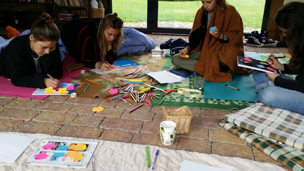
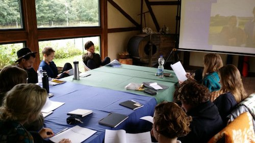

"Hitopadeśa"
Co indyjska mądrość ma do powiedzenia w sprawie dobierania przyjaciół? Przeczytaj historię nauczyciela, który zostaje wezwany przez króla, aby opowiadać małym książętom o zarządzaniu królestwem...
Cześć, jestem Kuba i znam bardzo fajny sposób na radzenie sobie z emocjami. To, czym się tutaj dzielę, to pisanie introspektywne. Znajdziesz tutaj wszystko co potrzebne, aby zacząć z nim swoją samodzielną przygodę: kurs online, materiały teoretyczne i techniki pisania z przykładami.
Także wskakuj na głęboką wodę...
... albo przeczytaj najpierw rozmowę z Dorotą Lipnicką z e-inspiracja.pl!
... lub posłuchaj rozmowy z Piotrem Peszko z 2edu.pl!
Szukasz inspiracji? W podróży pisania introspektywnego warto czytać introspektywistów...
Co indyjska mądrość ma do powiedzenia w sprawie dobierania przyjaciół? Przeczytaj historię nauczyciela, który zostaje wezwany przez króla, aby opowiadać małym książętom o zarządzaniu królestwem...
Nudzi cię teoria? Chcesz zobaczyć jak ktoś rozemocjonowany wyrusza w wewnętrzną podróż? Poczytaj o bohaterze, który z programując za niezłe pieniądze otrzymał wezwanie, aby oderwać się od maszyn...
Po opuszczeniu rodzinnej Belgii i latach wędrówki, przemierzywszy rowerem wiele krajów Europy, Afryki, Azji, Jaya Devi (wym. Dżaja Dewi) znalazła swój duchowy dom w Indiach...
W ogrodzie i na plaży, w domu i na uczelni...
Warsztaty na Akademii Sztuk Pięknych w Warszawie
Grupa nad jeziorem, introspekcja przed pływaniem
Rysowanie przed pisaniem
Wizualizacje z pisaniem w mieszkaniu w Warszawie
Prezentacja o tym, czym jest pisanie introspektywne
"Chodzi o postawę serca, które albo wychyla się ku czemuś, co jest poza czy raczej ponad nami, albo pozostaje w ciasnym kręgu własnego 'ja'. W tym znaczeniu wszyscy jesteśmy nie do końca jednoznaczni. Prawda jest taka, że nawet ten, kto deklaruje, że kieruje się w życiu wartościami: dobrem, miłością, prawdą, czasem oszukuje samego siebie i jego wybory są nie zawsze uświadomioną mieszaniną dobra i egoizmu. Może też być odwrotnie. Nawet jeśli ktoś żyje daleko od świata wartości, to nosi w sobie głębokie pragnienie dobra. I ono może objawić się w najmniej oczekiwanym momencie". – siostra Bogna Młynarz
Kurs online "Dogadaj się z emocjami" zabierze Cię w podróż z pisaniem introspektywnym. Pomoże Ci uzyskać solidny wgląd w to, jak samodzielnie poukładać sobie relacje z własnymi emocjami. Jeśli w trakcie jego oglądania pojawią się pytania, pisz śmiało!
Tak, słucham?

Jakub Godawa organizuje i prowadzi warsztaty wyjazdowe, sesje indywidualne i grupowe. Tłumaczy książki i zajęcia z zakresu psychologii i kultury wedyjskiej. Rozwija i promuje opracowaną przez siebie metodę pisania introspektywnego. Pochodzi z Poznania, półtora roku mieszkał w Indiach, trzy lata w Hiszpani a rok w Berlinie. Obecnie mieszka razem z narzeczoną w Otwocku i bardzo mu się tam podoba.
Z zawodu jest programistą i uwielbia pisać kod od podstaw. Je tylko roślinki, chyba że jest na wsi, gdzie krowy pasą się do końca życia i nikt nie zabiera im cielaków. Od takich krów uwielbia pić mleko. Na jego Instagramie znajdziecie to, co zwykle ląduje na jego talerzu, a na kanale YouTube ciekawe wywiady, które przeprowadził.
Kuba lubi dzielić się introspekcją i zachęcać innych do samopoznania. Chcesz poczytać jego teksty? Zajrzyj na Google Docs i czytaj w dogodnym dla Ciebie formacie (PDF, ePub, docx i inne). Chcesz dostawać powiadomienie gdy pojawią się nowe? Dołącz do grupy "Dogadaj się z emocjami" na Facebooku lub po prostu daj znać.